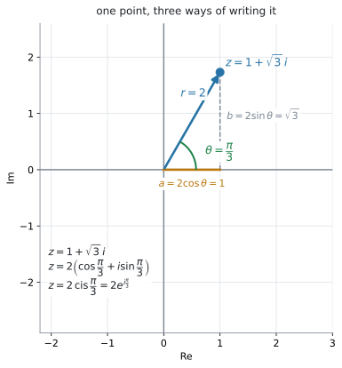
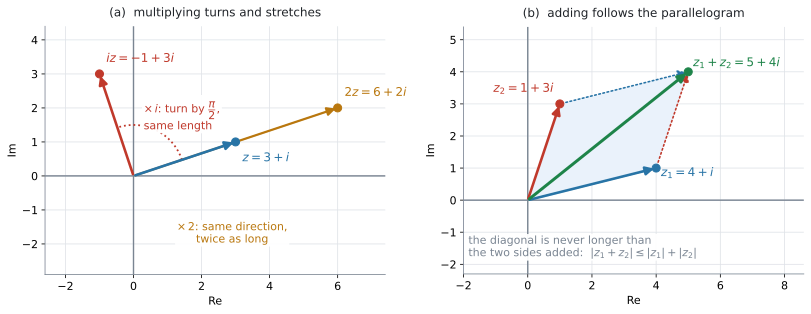
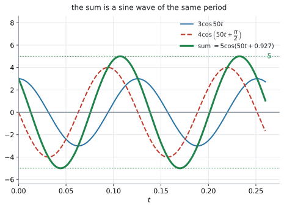
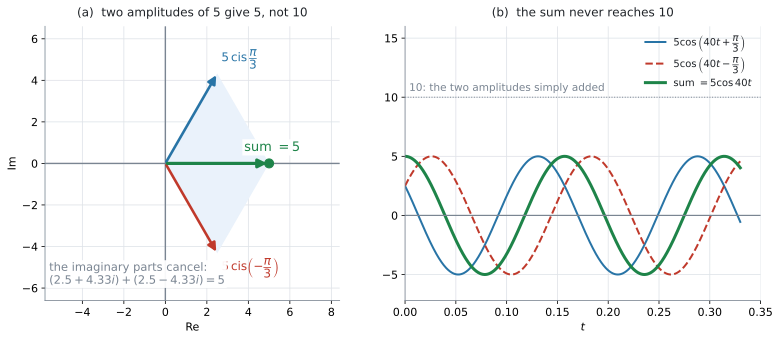

AHL 1.13 — Polar and exponential form（極形式と指数形式）
- \(z = a+bi\) を polar form（極形式）\(r(\cos\theta + i\sin\theta) = r\operatorname{cis}\theta\) に直せる。
- exponential form（指数形式）\(re^{i\theta}\) で書け、\(3\) つの form を行き来できる。
- 逆に、\(r\) と \(\theta\) から \(a = r\cos\theta\)、\(b = r\sin\theta\) で Cartesian form に戻せる。
- 積は modulus をかけて argument を足す、商はその逆、と言える。
- 整数のべき乗を \(z^{n} = r^{n}\operatorname{cis}(n\theta)\) で求められる。
- Argand diagram の上で、かけ算が回転と拡大、足し算がベクトルの和であることを説明できる。
- 同じ frequency（周波数）の正弦波の和を、\(e^{i\omega t}\) をくくり出して \(A\cos(\omega t + B)\) の形にできる。
- 振幅は単純な和にならない理由を、図で説明できる。
\(1\) 行だけ印刷されています。
\[ z = r(\cos\theta + i\sin\theta) = r\,e^{i\theta} = r\operatorname{cis}\theta \tag{1}\]
見出しは「Modulus-argument (polar) and exponential (Euler) form」です。
この \(1\) 行が、\(3\) つの form が同じものだという宣言そのものです。配られるので、覚える必要はありません。
ただし、積・商・べき乗の規則はどこにも印刷されていません。 そこは自分の中に入れておく必要があります（第5節〜第7節）。
\(r\) と \(\theta\) を \(a\)、\(b\) から出す式（modulus と argument）も印刷されていません。それは AHL 1.12b で扱いました。
このページの後半（第10節〜第12節）で扱う正弦波の合成にも、新しい公式はありません。上の \(1\) 行と指数法則だけで進みます。
The idea
1. 同じ点を、別のやり方で指す
AHL 1.12b で、複素数を平面の点として書きました。その点を指すやり方は、\(2\) 通りあります。
- Cartesian form … 原点から右へ \(a\)、上へ \(b\)（\(z = a+bi\)）
- polar form … 原点から距離 \(r\)、向き \(\theta\)
住所の書き方が変わるだけで、点そのものは同じです。番地で言うか、駅からの距離と方角で言うかの違いだと思ってください。

2. polar form の作り方
図 1 の直角三角形を見てください。距離 \(r\)、向き \(\theta\) が決まれば
\[ a = r\cos\theta, \qquad b = r\sin\theta \tag{2}\]
です。これを \(z = a+bi\) に入れると
\[ z = r\cos\theta + i\,r\sin\theta = r(\cos\theta + i\sin\theta) \]
となります。これが polar form（極形式）です。\(r\) でくくっただけなので、新しいことは何も起きていません。
\(\cos\theta + i\sin\theta\) は毎回書くには長いので、\(\operatorname{cis}\theta\) と略します。
\[ z = r\operatorname{cis}\theta \]
\(\operatorname{cis}\) は cosine と i sine を組み合わせた略記で、
\[ \operatorname{cis}\theta = \cos\theta + i\sin\theta \]
を表します。\(\operatorname{cis}\theta\) でひとかたまりだと読んでください。
\(\cos\theta \times i \times \sin\theta\) ではありません。
\(r\) と \(\theta\) の出し方は AHL 1.12b のとおりです。
\[ r = \lvert z \rvert = \sqrt{a^{2}+b^{2}}, \qquad \theta = \arg z \]
\(\theta\) は象限を確かめてから決めます（AHL 1.12b）。ここでも \(\arctan\) の値をそのまま使わないでください。
図 1 は \(z = 1 + \sqrt{3}\,i\) です。
\[ r = \sqrt{1^{2}+(\sqrt{3})^{2}} = \sqrt{4} = 2 \]
点 \((1,\ \sqrt{3})\) は第 \(1\) 象限なので、\(\arctan\) の値がそのまま使えます。
\[ \theta = \arctan\frac{\sqrt{3}}{1} = \frac{\pi}{3} \]
\[ z = 2\left(\cos\frac{\pi}{3} + i\sin\frac{\pi}{3}\right) = 2\operatorname{cis}\frac{\pi}{3} \]
3. exponential form は、同じものの \(3\) 番目の顔
式 1 の最後の等号が言っているのは、次のことです。
\[ \cos\theta + i\sin\theta = e^{i\theta} \tag{3}\]
ですから
\[ z = r\,e^{i\theta} \]
とも書けます。これが exponential form（指数形式）です。Euler form（オイラー形式）と呼ばれることもあります。
さきほどの \(z = 1+\sqrt{3}\,i\) なら、\(z = 2e^{i\frac{\pi}{3}}\) です。
\(e\) の肩に乗っている数は足し算・引き算ができます。
\[ e^{i\theta_1} \times e^{i\theta_2} = e^{i(\theta_1+\theta_2)} \]
これが、第5節 の「argument を足す」という規則の正体です。新しい規則を覚えるのではなく、指数法則がそのまま働いていると見てください。
\(e^{i\theta}\) の \(\theta\) に、度の数を入れてはいけません。\(60^{\circ}\) なら \(e^{i\frac{\pi}{3}}\) であって、\(e^{60i}\) ではありません。
\(e^{60i}\) は \(60\) radian の向き、つまりまったく別の点を指します。度が出てきたら、まず radian に直してください（Common errors の \(1\) つ目）。
4. polar から Cartesian に戻す
戻すときは 式 2 をそのまま使います。新しい式は要りません。

図 2 は \(4\operatorname{cis}\dfrac{2\pi}{3}\) です。
\[ a = 4\cos\frac{2\pi}{3} = 4\left(-\frac{1}{2}\right) = -2 \]
\[ b = 4\sin\frac{2\pi}{3} = 4\left(\frac{\sqrt{3}}{2}\right) = 2\sqrt{3} \]
\[ 4\operatorname{cis}\frac{2\pi}{3} = -2 + 2\sqrt{3}\,i \]
検算。 \(\lvert -2+2\sqrt{3}\,i \rvert = \sqrt{4+12} = 4\) ✓ modulus が元の \(r\) に戻りました。
5. 積は「modulus をかけて、argument を足す」
Cartesian form でかけ算をするときは、\(4\) 回かけて \(i^{2} = -1\) を処理する必要がありました（AHL 1.12a）。polar form には、その手間の要らない書き方があります。
\[ r_1\operatorname{cis}\theta_1 \times r_2\operatorname{cis}\theta_2 = r_1 r_2 \operatorname{cis}(\theta_1+\theta_2) \tag{4}\]
言葉にすると
- \(\lvert z_1 z_2 \rvert = \lvert z_1 \rvert \lvert z_2 \rvert\)（長さはかけ算）
- \(\arg(z_1 z_2) = \arg z_1 + \arg z_2\)（角は足し算、\(z_1 \neq 0\)、\(z_2 \neq 0\)）
です。\(1\) つ目は \(z_1\)、\(z_2\) が何であっても成り立ちますが、\(2\) つ目には条件が付きます。\(z = 0\) の argument は定義されないからです（AHL 1.12b）。
そして、この足し算は \(2\pi\) の整数倍のちがいを除いて成り立ちます。 \(\theta_1+\theta_2\) が \(-\pi < \theta \leq \pi\) からはみ出すことがあるからです。principal argument として答えるときは、最後に \(2\pi\) を足し引きしてこの範囲へ戻してください（第8節）。式 4 のほうは、はみ出しても正しいままです。
exponential form で書くと、第3節 の指数法則そのものになります。
\[ r_1 e^{i\theta_1} \times r_2 e^{i\theta_2} = r_1 r_2\, e^{i(\theta_1+\theta_2)} \]
6. 商は「modulus をわって、argument を引く」
わり算にも、同じ形の規則があります。ここでは \(z_2 \neq 0\)、つまり \(r_2 \neq 0\) とします。
\[ \frac{r_1\operatorname{cis}\theta_1}{r_2\operatorname{cis}\theta_2} = \frac{r_1}{r_2}\operatorname{cis}(\theta_1-\theta_2) \tag{5}\]
argument の引き算も、\(z_1 \neq 0\)、\(z_2 \neq 0\) のとき、\(2\pi\) の整数倍のちがいを除いて成り立ちます（第5節 と同じです）。principal argument として答えるなら、最後に \(-\pi < \theta \leq \pi\) へ戻してください。
AHL 1.12a では、conjugate をかけて分母を実数にしていました。polar form なら、その手間が要りません。 割り算が多い問題では、こちらのほうがずっと速く終わります。
7. 整数のべき乗
式 4 を \(n\) 回くり返すと
\[ z^{n} = r^{n}\operatorname{cis}(n\theta) = r^{n}e^{in\theta} \tag{6}\]
です。
このくり返しで出せるのは、\(n\) が正の整数のときです。負の整数のときも、\(z \neq 0\) であれば 第6節 の商の規則から同じ形になります。
\[ z^{-m} = \frac{1\operatorname{cis}0}{r^{m}\operatorname{cis}(m\theta)} = \frac{1}{r^{m}}\operatorname{cis}(-m\theta) \]
ですから、\(z \neq 0\) なら \(n\) は負の整数でも構いません。
\(z = 1+\sqrt{3}\,i = 2\operatorname{cis}\dfrac{\pi}{3}\) で \(n = 6\) とすると
\[ z^{6} = 2^{6}\operatorname{cis}\left(6 \times \frac{\pi}{3}\right) = 64\operatorname{cis}(2\pi) = 64 \]
ここで \(\operatorname{cis}(2\pi) = \cos 2\pi + i\sin 2\pi = 1 + 0i = 1\) なので、答えは実数の \(64\) です。
検算。 \((1+\sqrt{3}\,i)^{6}\) を Cartesian form のまま展開しても \(64\) になります ✓ \(2\) 通りの道で、同じ答えに着きました。
\((\operatorname{cis}\theta)^{n} = \operatorname{cis}(n\theta)\) は、de Moivre’s theorem（ド・モアブルの定理）と呼ばれます。
AI HL のシラバスにも公式集にも、de Moivre’s theorem という定理名は出てきません。 名前を知らなくても点は取れます。他の本を読むときのために、ここに書いておきます。
複素数の根を求める問題は、試験では出ません。 \(z^{5}\) を求める問題は出ますが、\(z^{4} = -16\) を満たす \(z\) を \(4\) つ求めなさいという問題は出ません。
\(4\) 乗して \(-16\) になる実数はないので、\(4\) つとも実数ではない複素数です。目で見つけることはできず、円の上に等間隔で並ぶ答えを取り出す手順が別に要ります。 そこが範囲外の部分です。式 6 の \(n\) は整数だと考えてください。
8. 角は、範囲に戻します
argument を足したり \(n\) 倍したりすると、\(-\pi < \theta \leq \pi\) の範囲からはみ出すことがあります（AHL 1.12b）。
\[ \frac{3\pi}{4} + \frac{\pi}{2} = \frac{5\pi}{4} \]
\(\dfrac{5\pi}{4} > \pi\) なので、\(2\pi\) を引いて
\[ \frac{5\pi}{4} - 2\pi = -\frac{3\pi}{4} \]
とします。\(2\pi\) 足しても引いても、指している点は同じです。変わるのは \(\theta\) の書き方だけで、\(z\) そのものは動きません。
Give your answer in the interval として \(-\pi < \arg z \leq \pi\) が指定されたら、この直しが要ります。
9. かけ算は「回転と拡大」です

図 3 の (a) を見てください。\(z = 3+i\) に
- \(i\) をかけると、長さはそのままで \(\dfrac{\pi}{2}\) だけ回ります（\(\lvert i \rvert = 1\)、\(\arg i = \dfrac{\pi}{2}\) だから）
- \(2\) をかけると、向きはそのままで長さが \(2\) 倍になります（\(\lvert 2 \rvert = 2\)、\(\arg 2 = 0\) だから）
一般に、\(w \neq 0\) をかけることは、\(\arg w\) だけ回して、長さを \(\lvert w \rvert\) 倍にすることです。\(\lvert w \rvert > 1\) なら伸び、\(\lvert w \rvert < 1\) なら縮み、\(\lvert w \rvert = 1\) なら長さは変わりません。\(w = 0\) をかけると、どの点も原点に移ります。式 4 が、そのまま図の言葉になっています。
AHL 1.12a で \(i\) の累乗が \(4\) つで一周したのは、\(\dfrac{\pi}{2}\) ずつ回ると \(4\) 回で \(2\pi\) になるから、と読み直せます。
足し算は、ベクトルの和
図 3 の (b) は \(z_1 = 4+i\) と \(z_2 = 1+3i\) です。real part どうし、imaginary part どうしを足すのは、矢印を平行四辺形でつなぐのと同じことです。
\[ z_1 + z_2 = 5 + 4i \]
平行四辺形の対角線は、\(2\) 辺をまっすぐつないだ長さを超えません。式で書くと \(\lvert z_1+z_2 \rvert \leq \lvert z_1 \rvert + \lvert z_2 \rvert\) です（図 3 の (b) の注記）。modulus は足し算では出ない、ということを言っています。試験で問われる式ではありませんが、第11節 で振幅が単純に足せない理由が、これと同じことです。
足し算・引き算は Cartesian form、かけ算・わり算・べき乗は polar form が速い、と覚えておくと迷いません。
10. 同じ frequency の正弦波を足す
\[ 3\cos 50t \quad \text{と} \quad 4\cos\left(50t + \frac{\pi}{2}\right) \]
を足してみます。どちらも \(50t\) の部分が同じ、つまり frequency（周波数）が同じで、phase（位相）だけが違います。

図 4 の緑の線が、\(2\) つを足したものです。でこぼこにはならず、同じ周期の正弦波のままです。変わったのは \(2\) つだけです。
- amplitude（振幅）が \(3\) でも \(4\) でもなく \(5\) になった
- 波全体が横にずれた
つまり、答えは次の形に書けます。
\[ A_1\cos(\omega t + \phi_1) + A_2\cos(\omega t + \phi_2) = A\cos(\omega t + B) \tag{7}\]
ここで習うのは、\(A\) と \(B\) の求め方です。\(\omega\) は変わりません。
\(\cos\) は、指数形式の real part です
第3節 の \(e^{i\theta} = \cos\theta + i\sin\theta\) から
\[ \cos\theta = \operatorname{Re}\left(e^{i\theta}\right), \qquad \sin\theta = \operatorname{Im}\left(e^{i\theta}\right) \tag{8}\]
です。ですから、上の和は
\[ 3\cos 50t + 4\cos\left(50t+\frac{\pi}{2}\right) = \operatorname{Re}\left(3e^{(50t)i} + 4e^{\left(50t+\frac{\pi}{2}\right)i}\right) \]
と書けます。ここで指数法則を使って、共通部分 \(e^{50ti}\) をくくり出します（第3節）。
\[ 3e^{(50t)i} + 4e^{\left(50t+\frac{\pi}{2}\right)i} = e^{50ti}\left(3e^{0i} + 4e^{\frac{\pi}{2}i}\right) \]
かっこの中は \(t\) を含まない、ただの複素数です。\(a+bi\) に直して足します。
\[ 3e^{0i} = 3, \qquad 4e^{\frac{\pi}{2}i} = 4i \qquad \Rightarrow \qquad 3 + 4i \]
\(\lvert 3+4i \rvert = 5\)、\(\arg(3+4i) = \arctan\dfrac{4}{3} = 0.927\) なので、\(3+4i = 5e^{0.927i}\) です。これを戻すと
\[ e^{50ti} \times 5e^{0.927i} = 5e^{(50t+0.927)i} \]
\[ 3\cos 50t + 4\cos\left(50t+\frac{\pi}{2}\right) = \operatorname{Re}\left(5e^{(50t+0.927)i}\right) \]
\(\operatorname{Re}\left(5e^{i\theta}\right) = 5\cos\theta\) ですから、答えは
\[ 3\cos 50t + 4\cos\left(50t+\frac{\pi}{2}\right) = 5\cos(50t + 0.927) \]
です。\(3\) でも \(4\) でも \(7\) でもなく、振幅が \(5\) になりました。
手順は \(4\) つです
- 各項を \(A e^{i\phi}\) の \(a+bi\) に直す（\(\omega t\) は共通なので外に置いたまま）
- 足す（real part どうし、imaginary part どうし）
- 足した複素数の modulus が \(A\)、argument が \(B\)
- \(A\cos(\omega t + B)\) と書く
\(3\) 番の argument は、象限を確かめてから決めてください（AHL 1.12b）。\(\arctan\) の値をそのまま使うと間違えます。
くくり出せるのは、\(2\) つの \(\omega\) が同じときだけです。シラバスも with the same frequencies と断っています。
\(\cos 50t + \cos 30t\) のような和は、そもそも正弦波になりません。この項目の範囲外です。
\(B\) は、合成した波がもとの \(\cos\omega t\) から角にしてどれだけずれたかを表します。\(B = 0.927\) は「\(0.927\) 秒ずれる」という意味ではありません。
\(\omega > 0\) のとき、時間軸の上での符号付きの移動量は
\[ -\frac{B}{\omega} \ \text{秒} \tag{9}\]
です。\(B = 0.927\)、\(\omega = 50\) なら \(-0.0185\) 秒、つまり山が来るのは \(t = 0\) ではなく \(t = -0.0185\) 秒です。この読み替えは AHL 3.12b で使います。
答えを \(A\sin(\omega t + B)\) の形で求めよ、と言われたら、式 8 の \(\sin\theta = \operatorname{Im}\left(e^{i\theta}\right)\) から出発します。\(\operatorname{Re}\) が \(\operatorname{Im}\) に変わるだけで、くくり出しも足し算も、まったく同じです。
11. 振幅は、足し算ではありません
\(3\) と \(4\) を足した波の振幅は \(7\) ではなく \(5\) でした。なぜ小さくなるのかを、図で見ておきます。

図 5 の (a) は、振幅が同じ \(5\) で、phase が \(\dfrac{\pi}{3}\) と \(-\dfrac{\pi}{3}\) の \(2\) つです。中の複素数は \(2.5 + 4.33i\) と \(2.5 - 4.33i\) で、足すと imaginary part が打ち消し合って \(5\) になります。\(A = 5\)、\(B = 0\) です。(b) のグラフでも、緑の波は \(10\) に届いていません。
\(\phi_1 = \phi_2\) なら \(2\) つの矢印が一直線に並ぶので、\(A = A_1 + A_2\) です。向きが違えば、必ずそれより小さくなります。
\[ A \leq A_1 + A_2 \]
これは 第9節 の \(\lvert z_1+z_2 \rvert \leq \lvert z_1 \rvert + \lvert z_2 \rvert\) そのものです。平行四辺形の対角線は、\(2\) 辺をまっすぐつないだ長さを超えない、という図形の性質です。
ちょうど打ち消し合って \(0\) になるときは \(A = 0\) で、答えは \(0\) とします。
12. \(\sin\) と \(\cos\) が混ざっているとき
複素数に直す前に、形をそろえます。 そろえてしまえば、あとは同じ手順です。
\[ \sin\theta = \cos\left(\theta - \frac{\pi}{2}\right), \qquad \cos\theta = \sin\left(\theta + \frac{\pi}{2}\right) \tag{10}\]
たとえば \(4\sin 2t\) を \(\cos\) にそろえるなら \(4\cos\left(2t - \dfrac{\pi}{2}\right)\) で、中の複素数は \(4e^{-\frac{\pi}{2}i} = -4i\) です。
問題文が求めている形に、最初からそろえてください。 最後に直そうとすると、\(\dfrac{\pi}{2}\) の足し引きを間違えやすくなります。
シラバスの AHL 3.8 の Guidance 欄には、こう書かれています。
Knowledge of exact values of \(\cos\theta\), \(\sin\theta\), and \(\tan\theta\) will not be assessed on examinations, but may aid student understanding of trigonometric functions.
\(\cos\dfrac{\pi}{3} = \dfrac{1}{2}\) のような値は、電卓で出して構いません。ここで exact の練習をするのは、答えが \(2\sqrt{3}\) のようにきれいになるとき、そのまま書いたほうが速く済むからです。
Why it works
ここでは、なぜ \(e^{i\omega t}\) をくくり出してよいのかだけを説明します。第10節 でやったことを、文字のまま書き直したものです。
式 8 から、\(1\) つの波は
\[ A\cos(\omega t + \phi) = \operatorname{Re}\left(A e^{i(\omega t + \phi)}\right) = \operatorname{Re}\left(A e^{i\phi} \cdot e^{i\omega t}\right) \]
と書けます。指数法則で \(e^{i(\omega t+\phi)}\) を \(2\) つに分けたところが要点です（第3節）。\(Ae^{i\phi}\) には \(t\) が入っておらず、\(e^{i\omega t}\) が共通部分になりました。
\(2\) つの波を足すと
\[ \operatorname{Re}\left(A_1 e^{i\phi_1}e^{i\omega t}\right) + \operatorname{Re}\left(A_2 e^{i\phi_2}e^{i\omega t}\right) = \operatorname{Re}\left(\left(A_1 e^{i\phi_1} + A_2 e^{i\phi_2}\right)e^{i\omega t}\right) \]
です。\(\operatorname{Re}(z_1)+\operatorname{Re}(z_2) = \operatorname{Re}(z_1+z_2)\) を使い、\(e^{i\omega t}\) でくくりました。\(\omega\) が同じでなければ、このくくり出しはできません。
あとはかっこの中の複素数を \(Ae^{iB}\) の形にまとめれば
\[ \operatorname{Re}\left(A e^{iB} e^{i\omega t}\right) = \operatorname{Re}\left(A e^{i(\omega t + B)}\right) = A\cos(\omega t + B) \]
となります。つまり、やっているのは共通部分を外に置いたまま、中身の複素数だけを足すことです。
全部を \(\sin\) でそろえたときは、\(\sin\theta = \operatorname{Im}\left(e^{i\theta}\right)\) から出発して、同じ計算をたどります。\(\operatorname{Re}\) が \(\operatorname{Im}\) に変わるだけです。大事なのは、\(2\) つの波を同じ \(\sin\)（または同じ \(\cos\)）にそろえてから始めることです。
Worked examples
問題文は英語です。意味が理解できなかったら、問題文の下の「日本語訳」を開いてください。解説は日本語です。
例題 1 Let \(z = 1 + \sqrt{3}\,i\).
(a) Find \(\lvert z \rvert\) and \(\arg z\), giving the argument as an exact multiple of \(\pi\).
(b) Write \(z\) in the form \(r\operatorname{cis}\theta\).
(c) Write \(z\) in the form \(re^{i\theta}\).
日本語訳
\(z = 1+\sqrt{3}\,i\) とします。
(a) \(\lvert z \rvert\) と \(\arg z\) を求めなさい。argument は \(\pi\) の正確な倍数で書きなさい。
(b) \(z\) を \(r\operatorname{cis}\theta\) の形で書きなさい。
(c) \(z\) を \(re^{i\theta}\) の形で書きなさい。
(a) modulus は Pythagoras です（AHL 1.12b）。
\[ \lvert z \rvert = \sqrt{1^{2}+(\sqrt{3})^{2}} = \sqrt{1+3} = 2 \]
点 \((1,\ \sqrt{3})\) は第 \(1\) 象限なので、\(\arctan\) の値をそのまま使えます。
\[ \arg z = \arctan\sqrt{3} = \frac{\pi}{3} \]
(b) (a) の \(2\) つを 式 1 に入れるだけです。
\[ z = 2\operatorname{cis}\frac{\pi}{3} \]
(c) \(\operatorname{cis}\theta\) を \(e^{i\theta}\) に書き換えます。
\[ z = 2e^{i\frac{\pi}{3}} \]
検算。 \(2\cos\dfrac{\pi}{3} = 2 \times \dfrac{1}{2} = 1\)、\(2\sin\dfrac{\pi}{3} = 2 \times \dfrac{\sqrt{3}}{2} = \sqrt{3}\) ✓ 元の \(1 + \sqrt{3}\,i\) に戻りました。
(a) \[\lvert z \rvert = \sqrt{1^{2}+(\sqrt{3})^{2}} = 2\] \[\arg z = \arctan\sqrt{3} = \frac{\pi}{3} \quad (\text{first quadrant})\]
(b) \[z = 2\operatorname{cis}\frac{\pi}{3}\]
(c) \[z = 2e^{i\frac{\pi}{3}}\]
例題 2 Write \(w = 4\operatorname{cis}\dfrac{2\pi}{3}\) in the form \(a+bi\), giving exact values for \(a\) and \(b\).
日本語訳
\(w = 4\operatorname{cis}\dfrac{2\pi}{3}\) を \(a+bi\) の形で書きなさい。\(a\) と \(b\) は正確な値で書きなさい。
式 2 に \(r = 4\)、\(\theta = \dfrac{2\pi}{3}\) を入れます（第4節）。
\[ a = 4\cos\frac{2\pi}{3} = 4\left(-\frac{1}{2}\right) = -2 \]
\[ b = 4\sin\frac{2\pi}{3} = 4\left(\frac{\sqrt{3}}{2}\right) = 2\sqrt{3} \]
\[ w = -2 + 2\sqrt{3}\,i \]
\(\theta = \dfrac{2\pi}{3}\) は第 \(2\) 象限の角なので、real part が負になるのは図と合っています（図 2）。
検算。 \(\lvert w \rvert = \sqrt{(-2)^{2}+(2\sqrt{3})^{2}} = \sqrt{4+12} = 4\) ✓ \(r\) に戻りました。
\[a = 4\cos\frac{2\pi}{3} = -2, \qquad b = 4\sin\frac{2\pi}{3} = 2\sqrt{3}\] \[w = -2 + 2\sqrt{3}\,i\]
例題 3 Let \(z_1 = 2\operatorname{cis}\dfrac{\pi}{3}\) and \(z_2 = 3\operatorname{cis}\dfrac{\pi}{4}\).
(a) Find \(z_1 z_2\), giving your answer in the form \(r\operatorname{cis}\theta\).
(b) Find \(\dfrac{z_1}{z_2}\), giving your answer in the form \(r\operatorname{cis}\theta\).
日本語訳
\(z_1 = 2\operatorname{cis}\dfrac{\pi}{3}\)、\(z_2 = 3\operatorname{cis}\dfrac{\pi}{4}\) とします。
(a) \(z_1 z_2\) を求め、\(r\operatorname{cis}\theta\) の形で書きなさい。
(b) \(\dfrac{z_1}{z_2}\) を求め、\(r\operatorname{cis}\theta\) の形で書きなさい。
(a) modulus はかけ算、argument は足し算です（式 4）。
\[ r = 2 \times 3 = 6 \]
\[ \theta = \frac{\pi}{3} + \frac{\pi}{4} = \frac{4\pi}{12} + \frac{3\pi}{12} = \frac{7\pi}{12} \]
\[ z_1 z_2 = 6\operatorname{cis}\frac{7\pi}{12} \]
\(\dfrac{7\pi}{12} \approx 1.83\) で、\(-\pi < \theta \leq \pi\) の中に入っています。直す必要はありません（第8節）。
(b) modulus はわり算、argument は引き算です（式 5）。
\[ r = \frac{2}{3} \]
\[ \theta = \frac{\pi}{3} - \frac{\pi}{4} = \frac{4\pi}{12} - \frac{3\pi}{12} = \frac{\pi}{12} \]
\[ \frac{z_1}{z_2} = \frac{2}{3}\operatorname{cis}\frac{\pi}{12} \]
検算。 (a) の答えを \(z_2\) で割ると \(\dfrac{6}{3}\operatorname{cis}\left(\dfrac{7\pi}{12} - \dfrac{3\pi}{12}\right) = 2\operatorname{cis}\dfrac{4\pi}{12} = 2\operatorname{cis}\dfrac{\pi}{3} = z_1\) ✓
(a) \[z_1 z_2 = (2)(3)\operatorname{cis}\left(\frac{\pi}{3}+\frac{\pi}{4}\right) = 6\operatorname{cis}\frac{7\pi}{12}\]
(b) \[\frac{z_1}{z_2} = \frac{2}{3}\operatorname{cis}\left(\frac{\pi}{3}-\frac{\pi}{4}\right) = \frac{2}{3}\operatorname{cis}\frac{\pi}{12}\]
例題 4 Let \(z = 1 + i\).
(a) Write \(z\) in the form \(re^{i\theta}\).
(b) Hence find \(z^{8}\), giving your answer in the form \(a+bi\).
(c) Describe the effect on the Argand diagram of multiplying a complex number by \(z\).
日本語訳
\(z = 1+i\) とします。
(a) \(z\) を \(re^{i\theta}\) の形で書きなさい。
(b) これを用いて \(z^{8}\) を求め、\(a+bi\) の形で書きなさい。
(c) 複素数に \(z\) をかけると、Argand diagram の上で何が起きるかを述べなさい。
(a) \(\lvert z \rvert = \sqrt{1+1} = \sqrt{2}\)、点 \((1,\ 1)\) は第 \(1\) 象限なので \(\arg z = \arctan 1 = \dfrac{\pi}{4}\) です。
\[ z = \sqrt{2}\,e^{i\frac{\pi}{4}} \]
(b) 式 6 をそのまま使います。\(r\) も \(8\) 乗することを忘れないでください。
\[ z^{8} = \left(\sqrt{2}\right)^{8} e^{i \times 8 \times \frac{\pi}{4}} = 16\,e^{2\pi i} \]
\(e^{2\pi i} = \cos 2\pi + i\sin 2\pi = 1\) なので
\[ z^{8} = 16 \]
検算。 AHL 1.12a では \((1+i)^{2} = 2i\) から \(z^{8} = (2i)^{4} = 16\) と出しました ✓ 同じ答えに、\(2\) 通りの道で着きました。
(c) 言葉で答える設問です。\(\lvert z \rvert\) と \(\arg z\) の \(2\) つを、両方言う必要があります（第9節）。
試験ではこう書く
Multiplying by \(z\) rotates the point anticlockwise about the origin through \(\frac{\pi}{4}\), and stretches its distance from the origin by a factor of \(\sqrt{2}\).
（\(z\) をかけると、点は原点のまわりに反時計回りに \(\dfrac{\pi}{4}\) 回転し、原点からの距離が \(\sqrt{2}\) 倍になる、という意味です。）
(a) \[\lvert z \rvert = \sqrt{2}, \quad \arg z = \frac{\pi}{4} \ \Rightarrow \ z = \sqrt{2}\,e^{i\frac{\pi}{4}}\]
(b) \[z^{8} = \left(\sqrt{2}\right)^{8}e^{i(8)\left(\frac{\pi}{4}\right)} = 16e^{2\pi i} = 16\]
(c) Multiplying by \(z\) rotates the point through \(\frac{\pi}{4}\) anticlockwise about the origin and stretches its distance from the origin by a factor of \(\sqrt{2}\).
例題 5 Two voltages in a circuit are \(V_1 = 3\cos 50t\) and \(V_2 = 4\cos\left(50t + \dfrac{\pi}{2}\right)\), where \(V\) is in volts and \(t\) is in seconds.
Find the total voltage \(V_1 + V_2\) in the form \(A\cos(50t + B)\), where \(A > 0\) and \(B\) is in radians correct to \(3\) significant figures.
日本語訳
ある回路の \(2\) つの電圧が \(V_1 = 3\cos 50t\)、\(V_2 = 4\cos\left(50t+\dfrac{\pi}{2}\right)\) です。\(V\) の単位はボルト、\(t\) の単位は秒です。
合計の電圧 \(V_1 + V_2\) を \(A\cos(50t+B)\) の形で求めなさい。\(A > 0\) とし、\(B\) は radian で有効数字 \(3\) 桁で書きなさい。
第10節 の手順どおりに進めます。
手順 1。 各項の複素数を \(a+bi\) にします。\(\omega t = 50t\) は共通なので、外に置いたままです。
\[ V_1 \ \longrightarrow \ 3e^{0i} = 3 \]
\[ V_2 \ \longrightarrow \ 4e^{\frac{\pi}{2}i} = 4\left(\cos\frac{\pi}{2} + i\sin\frac{\pi}{2}\right) = 4i \]
手順 2。 足します。
\[ 3 + 4i \]
手順 3。 modulus と argument を読みます。点 \((3,\ 4)\) は第 \(1\) 象限なので、\(\arctan\) をそのまま使えます。
\[ A = \sqrt{3^{2}+4^{2}} = 5, \qquad B = \arctan\frac{4}{3} = 0.927 \]
手順 4。 形にして書きます。
\[ V_1 + V_2 = 5\cos(50t + 0.927) \]
検算。 \(t = 0\) を入れます。左辺は \(3\cos 0 + 4\cos\dfrac{\pi}{2} = 3 + 0 = 3\)、右辺は \(5\cos 0.927 = 5 \times 0.6 = 3\) ✓
\[V_1 \to 3e^{0i} = 3, \qquad V_2 \to 4e^{\frac{\pi}{2}i} = 4i\] \[3 + 4i\] \[A = \sqrt{3^{2}+4^{2}} = 5, \qquad B = \arctan\frac{4}{3} = 0.927\] \[V_1 + V_2 = 5\cos(50t + 0.927)\]
例題 6 Let \(y = 4\sin 2t + 3\cos 2t\).
Write \(y\) in the form \(A\sin(2t + B)\), where \(A > 0\) and \(B\) is in radians correct to \(3\) significant figures.
日本語訳
\(y = 4\sin 2t + 3\cos 2t\) とします。
\(y\) を \(A\sin(2t+B)\) の形で書きなさい。\(A > 0\) とし、\(B\) は radian で有効数字 \(3\) 桁で書きなさい。
答えが \(\sin\) の形なので、まず全部を \(\sin\) にそろえます（第12節）。
式 10 より \(\cos 2t = \sin\left(2t + \dfrac{\pi}{2}\right)\) です。
\[ y = 4\sin 2t + 3\sin\left(2t+\frac{\pi}{2}\right) \]
そろったので、\(\sin\theta = \operatorname{Im}\left(e^{i\theta}\right)\) から始めます。あとの手順は \(\cos\) のときと同じです。
手順 1・2。 中の複素数を足します。
\[ 4e^{0i} + 3e^{\frac{\pi}{2}i} = 4 + 3i \]
手順 3。 点 \((4,\ 3)\) は第 \(1\) 象限です。
\[ A = \sqrt{16+9} = 5, \qquad B = \arctan\frac{3}{4} = 0.644 \]
手順 4。
\[ y = 5\sin(2t + 0.644) \]
検算。 \(t = 0\) を入れます。左辺は \(4\sin 0 + 3\cos 0 = 3\)、右辺は \(5\sin 0.644 = 5 \times 0.6 = 3\) ✓
\[3\cos 2t = 3\sin\left(2t+\frac{\pi}{2}\right)\] \[4e^{0i} + 3e^{\frac{\pi}{2}i} = 4 + 3i\] \[A = \sqrt{4^{2}+3^{2}} = 5, \qquad B = \arctan\frac{3}{4} = 0.644\] \[y = 5\sin(2t + 0.644)\]
Common errors
z = 2 cis 60° を \(2e^{60i}\) と書いてしまう誤りです。
\(e^{i\theta}\) の \(\theta\) は radian です。\(60^{\circ} = \dfrac{\pi}{3}\) なので、正しくは \(2e^{i\frac{\pi}{3}}\) です。
\(e^{60i}\) は \(60\) radian、つまり \(9\) 周半ほど回った向きを指します。まったく別の点になります（第3節）。
\(r(\cos\theta + i\sin\theta)\) を \(r\cos\theta + i\sin\theta\) と書いてしまう誤りです。
かっこの中は \(2\) 項あるので、\(r\) は両方にかかります。
\[ r(\cos\theta + i\sin\theta) = r\cos\theta + i\,r\sin\theta \]
\(b = r\sin\theta\) であって \(b = \sin\theta\) ではありません（式 2）。
\(\left(\sqrt{2}\,e^{i\frac{\pi}{4}}\right)^{8}\) を \(\sqrt{2}\,e^{2\pi i}\) と書いてしまう誤りです。
\(n\) 乗はかたまり全体にかかります。
\[ (r e^{i\theta})^{n} = r^{n}e^{in\theta} \]
\(r\) も \(n\) 乗してください。\(\left(\sqrt{2}\right)^{8} = 16\) です（例 4）。
\(\dfrac{3\pi}{4} + \dfrac{\pi}{2} = \dfrac{5\pi}{4}\) のままにしてしまう誤りです。
in the interval の指定があるときは、\(2\pi\) を引いて \(-\dfrac{3\pi}{4}\) にしてください（第8節）。
指している点は同じで、\(\theta\) の書き方だけの問題ですが、指定を無視すると点になりません。
\(\operatorname{cis}\theta\) を \(\cos\theta \times i \times \sin\theta\) と読んでしまう誤りです。
\(\operatorname{cis}\) は \(\cos + i\sin\) の頭文字を並べた略記で、\(1\) かたまりです（第2節）。
不安なときは、\(\operatorname{cis}\) を使わずに \(\cos\theta + i\sin\theta\) と書き下してください。そのほうが安全です。
\(3\cos 50t + 4\cos\left(50t+\dfrac{\pi}{2}\right)\) の振幅を \(7\) と書いてしまう誤りです。
振幅が足し算になるのは、\(2\) つの phase が同じときだけです（第11節）。向きが違えば、必ずそれより小さくなります。
正しくは \(\lvert 3+4i \rvert = 5\) です。複素数を足してから modulus をとる、という順番を守ってください。
\(3\cos 50t\) を \(3e^{50ti}\) のかたまりとして足そうとしてしまう誤りです。
\(e^{i\omega t}\) は \(2\) つの波で共通なので、外にくくり出したままにします（Why it works）。中の複素数に入るのは phase shift の \(\phi\) だけです。
\(3\cos 50t\) は \(3\cos(50t + 0)\) なので、中の複素数は \(3e^{0i} = 3\) です。
\(3\cos 2t\) と \(4\sin 2t\) を、どちらも \(\phi = 0\) として足してしまう誤りです。
\(\sin\) と \(\cos\) は、すでに \(\dfrac{\pi}{2}\) ずれています。先にどちらかにそろえてください（第12節）。
\[ \cos 2t = \sin\left(2t+\frac{\pi}{2}\right), \qquad \sin 2t = \cos\left(2t - \frac{\pi}{2}\right) \]
GDC が Angle: Degree のままだと、\(\arctan\dfrac{4}{3}\) が \(53.1\) と返ります。
HL の試験では radian が既定です。\(A\cos(50t+B)\) の \(50t\) は radian なので、\(B\) も radian でなければ足せません。
\(53.1\) と \(0.927\) が混ざった式は、意味を持ちません。
Using your GDC (TI-Nspire CX II)
1. 準備は \(2\) つ
doc → Settings → Document SettingsAngleをRadianに（AHL 1.12b）Real or Complexを、見たい form に合わせて切り替える
2. Rectangular と Polar を切り替える
ここが、この項目の GDC の中心です。
Real or Complex の設定 |
返ってくる形 |
|---|---|
Real（初期値） |
複素数の答えは出ず、Error: Non-real result のようになります |
Rectangular |
\(a + bi\)（Cartesian form） |
Polar |
\(r\,e^{i\theta}\)（exponential form） |
同じ式を打っても、設定しだいで表示が変わります。 根号は ctrl + x² のテンプレートで入るので、式は見た目のまま打てます。
\[ 1+\sqrt{3}\,i \]
を Polar で打つと、\(2e^{1.0471976\,i}\) のように小数の角で返ります。CX II は、角を \(\pi\) の倍数の形では返しません。\(\dfrac{\pi}{3} = 1.047\ldots\) なので、\(\pi\) の倍数で答えたいときは自分で読み替えてください。Rectangular に戻すと \(1+\sqrt{3}\,i\) に戻ります。
シラバスは Conversion between Cartesian, polar and exponential forms, by hand and with technology と書いています。電卓側の変換は、この設定の切り替えのことです。
ただし答案には、\(r\) と \(\theta\) をどう出したかを書いてください（第2節）。
3. \(r\) と \(\theta\) を別々に出す
設定を変えずに済ませたいときは、\(2\) つの読み方があります。どちらも見た目のまま入ります。
\[ \lvert 1+\sqrt{3}\,i \rvert, \qquad \operatorname{angle}\left(1+\sqrt{3}\,i\right) \]
\(2\) と \(1.0471976\) が返ります。\(1.0471976 = \dfrac{\pi}{3}\) です。
modulus の絶対値記号は、\(9\) キーの右にあるテンプレートのパレットから選びます。\(\texttt{abs}\left(1 + \sqrt{3}i\right)\) と関数名で打っても同じ答えです。使い方は AHL 1.12b と同じです。
4. 積・商・べき乗
Polar にしておけば、そのまま打つだけで polar form の答えが返ります。指数は ^ を押すと上付きの位置に入るので、式は見た目のまま打てます。
\[ (1+i)^{8} \]
\(16\) と返ります。指数が大きくても同じです。
Find \(z^{8}\) と問われ、in the form a + bi が指定されていたら、\(r^{8}\) と \(8\theta\) を書いた行が要ります。
電卓は、出した答えが合っているかを確かめるために使います。
5. 正弦波を足すと、\(A\) と \(B\) が同時に出ます
Polar 設定のまま、中の複素数をそのまま足します（第10節）。
\[ 3e^{0i} + 4e^{\frac{\pi}{2}i} \]
\(\pi\) も分数のテンプレートも、そのままの形で入ります。\(5e^{0.927i}\) の形で返るので、\(A = 5\) と \(B = 0.927\) が、\(1\) 回の計算で両方読めます。
この打ち方が生きるのは、\(e^{\frac{2\pi}{3}i}\) のように \(a+bi\) へ直すのが面倒なときです。角が \(0\) や \(\dfrac{\pi}{2}\) だけなら、\(\lvert 3+4i \rvert\) と \(\operatorname{angle}(3+4i)\) のほうが速く済みます（第3節）。
Rectangular だと、\(3+4i\) が返ります
どちらの設定でも、計算しているものは同じです。Polar は modulus と argument を、Rectangular は real part と imaginary part を見せてくれる、という違いだけです（第2節）。
CX II は数値で計算するので、どちらの表示でも小数で返ります。
途中の足し算を確かめたいときは Rectangular、答えを読むときは Polar が便利です。
6. 合成した波は、グラフで確かめる
いちばん納得できる検算は、重ねて描くことです。
ctrl + doc → Add Graphs\(4\) つ入れます。
| 入力 | 何の線か |
|---|---|
f1(x)=3cos(50x) |
もとの波 \(1\) |
| \(f2(x) = 4\cos\left(50x + \dfrac{\pi}{2}\right)\) | もとの波 \(2\) |
f3(x)=f1(x)+f2(x) |
\(2\) つの和 |
f4(x)=5cos(50x+0.927) |
自分の答え |
f3 と f4 がぴったり重なれば、答えは合っています。 ずれていれば、\(A\) か \(B\) のどちらかが違います。
x の範囲は、周期 \(\dfrac{2\pi}{50} = 0.126\) の \(2\) 倍ほど、つまり \(0 \leq x \leq 0.25\) にすると見やすくなります。\(y\) の範囲も \(-6 \leq y \leq 6\) にしてください。 既定のままだと波が縦につぶれて、重なっているかどうかが分かりません。
- 山の高さが違う → \(A\) が違う
- 山の位置が横にずれている → \(B\) が違う
\(B\) の符号を間違えると、ずれの向きが逆になります。横のずれは \(-\dfrac{B}{\omega}\) 秒でした（式 9）。
7. 検算のしかた
- polar に直したら、
Rectangularに戻して元の \(a+bi\) と一致するか見る - 積を出したら、
abs()が \(r_1 r_2\) に、angle()が \(\theta_1+\theta_2\) になっているか見る。angle()はいつも \(-\pi < \theta \leq \pi\) で返すので、\(\theta_1+\theta_2\) がはみ出しているときは、先に \(2\pi\) を引いてから見くらべてください（第8節） - べき乗は、\(1\) 乗ずつかけた結果と突き合わせる
\(1\) つ目がいちばん手軽で、変換の間違いはほとんどこれで見つかります。
正弦波を合成したときは、\(t = 0\) を入れるのが最短です。
\[ \text{左辺} = 3\cos 0 + 4\cos\frac{\pi}{2} = 3, \qquad \text{右辺} = 5\cos 0.927 = 3 \]
\(1\) 点で合っただけでは足りないこともあるので、\(t\) をもう \(1\) つ選んで確かめると確実です。時間があれば、第6節 のグラフのほうが確実です。
Exercises
各問題に、折りたたみが3つ付いています。日本語訳、解答例（答案用紙に書くべきこと。英語です）、解説（なぜそうなるか。日本語です）。
まず自分で解いて、次に解答例と見くらべてください。解説は、合わなかったときだけ開けば十分です。
1 Write \(z = 3 + 4i\) in the form \(re^{i\theta}\), giving \(\theta\) in radians correct to \(3\) significant figures.
日本語訳
\(z = 3+4i\) を \(re^{i\theta}\) の形で書きなさい。\(\theta\) は radian で、有効数字 \(3\) 桁で書きなさい。
\[r = \sqrt{3^{2}+4^{2}} = 5\]
\[\theta = \arctan\frac{4}{3} = 0.927 \quad (\text{first quadrant})\]
\[z = 5e^{0.927i}\]
\(3\)–\(4\)–\(5\) の直角三角形です（AHL 1.12b）。
点 \((3,\ 4)\) は第 \(1\) 象限なので、\(\arctan\) の値をそのまま使えます。
\(e\) の肩に付ける \(i\) は、\(0.927i\) でも \(i \times 0.927\) でも構いません。\(e^{0.927}\) のように、\(i\) を落とさないでください。
2 Write \(z = -2 + 2i\) in the form \(r\operatorname{cis}\theta\), giving exact values for \(r\) and \(\theta\).
日本語訳
\(z = -2+2i\) を \(r\operatorname{cis}\theta\) の形で書きなさい。\(r\) と \(\theta\) は正確な値で書きなさい。
\[r = \sqrt{(-2)^{2}+2^{2}} = \sqrt{8} = 2\sqrt{2}\]
\[\arctan\frac{2}{-2} = -\frac{\pi}{4}\]
The point \((-2,\ 2)\) is in the second quadrant, so
\[\theta = -\frac{\pi}{4}+\pi = \frac{3\pi}{4}\]
\[z = 2\sqrt{2}\operatorname{cis}\frac{3\pi}{4}\]
\(\arctan(-1) = -\dfrac{\pi}{4}\) は第 \(4\) 象限の向きです。点は第 \(2\) 象限にあるので、\(\pi\) を足します（AHL 1.12b）。
\(\sqrt{8}\) は \(2\sqrt{2}\) まで直してください。「exact」と指定されているので、\(2.83\) とは書きません。
検算。 \(2\sqrt{2}\cos\dfrac{3\pi}{4} = 2\sqrt{2} \times \left(-\dfrac{1}{\sqrt{2}}\right) = -2\) ✓
3 Write \(z = 5\operatorname{cis}\dfrac{\pi}{6}\) in the form \(a+bi\), giving exact values for \(a\) and \(b\).
日本語訳
\(z = 5\operatorname{cis}\dfrac{\pi}{6}\) を \(a+bi\) の形で書きなさい。\(a\) と \(b\) は正確な値で書きなさい。
\[a = 5\cos\frac{\pi}{6} = \frac{5\sqrt{3}}{2}, \qquad b = 5\sin\frac{\pi}{6} = \frac{5}{2}\]
\[z = \frac{5\sqrt{3}}{2} + \frac{5}{2}i\]
4 Write \(z = 3e^{-i\frac{\pi}{2}}\) in the form \(a+bi\).
日本語訳
\(z = 3e^{-i\frac{\pi}{2}}\) を \(a+bi\) の形で書きなさい。
\[a = 3\cos\left(-\frac{\pi}{2}\right) = 0, \qquad b = 3\sin\left(-\frac{\pi}{2}\right) = -3\]
\[z = -3i\]
\(\theta = -\dfrac{\pi}{2}\) は真下の向きです。ですから、答えは負の虚軸上の点になります。
\(a = 0\) なので purely imaginary です（AHL 1.12a）。
\(0 + (-3)i\) は \(-3i\) と書けば十分です。\(0\) をわざわざ書く必要はありません。
5 Let \(z_1 = 4\operatorname{cis}\dfrac{\pi}{5}\) and \(z_2 = 2\operatorname{cis}\dfrac{\pi}{10}\). Find \(z_1 z_2\) and \(\dfrac{z_1}{z_2}\), giving each answer in the form \(r\operatorname{cis}\theta\).
日本語訳
\(z_1 = 4\operatorname{cis}\dfrac{\pi}{5}\)、\(z_2 = 2\operatorname{cis}\dfrac{\pi}{10}\) とします。\(z_1 z_2\) と \(\dfrac{z_1}{z_2}\) を求め、それぞれ \(r\operatorname{cis}\theta\) の形で書きなさい。
\[z_1 z_2 = (4)(2)\operatorname{cis}\left(\frac{\pi}{5}+\frac{\pi}{10}\right) = 8\operatorname{cis}\frac{3\pi}{10}\]
\[\frac{z_1}{z_2} = \frac{4}{2}\operatorname{cis}\left(\frac{\pi}{5}-\frac{\pi}{10}\right) = 2\operatorname{cis}\frac{\pi}{10}\]
\(\dfrac{\pi}{5} = \dfrac{2\pi}{10}\) に直してから足し引きすると、通分が楽になります。
\[\frac{2\pi}{10}+\frac{\pi}{10} = \frac{3\pi}{10}, \qquad \frac{2\pi}{10}-\frac{\pi}{10} = \frac{\pi}{10}\]
どちらの角も \(-\pi < \theta \leq \pi\) の中なので、直す必要はありません（第8節）。
modulus は足さないでください。 \(4\) と \(2\) は、かけて \(8\)、わって \(2\) です。
6 Let \(z = 2\operatorname{cis}\dfrac{\pi}{6}\).
(a) Find \(z^{4}\) in the form \(r\operatorname{cis}\theta\).
(b) Hence write \(z^{4}\) in the form \(a+bi\), giving exact values.
日本語訳
\(z = 2\operatorname{cis}\dfrac{\pi}{6}\) とします。
(a) \(z^{4}\) を \(r\operatorname{cis}\theta\) の形で求めなさい。
(b) これを用いて \(z^{4}\) を \(a+bi\) の形で書きなさい。値は正確に書きなさい。
(a) \[z^{4} = 2^{4}\operatorname{cis}\left(4 \times \frac{\pi}{6}\right) = 16\operatorname{cis}\frac{2\pi}{3}\]
(b) \[a = 16\cos\frac{2\pi}{3} = -8, \qquad b = 16\sin\frac{2\pi}{3} = 8\sqrt{3}\] \[z^{4} = -8 + 8\sqrt{3}\,i\]
(a) \(r\) も \(4\) 乗します。\(2^{4} = 16\) です（Common errors の \(3\) つ目）。
角は \(4 \times \dfrac{\pi}{6} = \dfrac{4\pi}{6} = \dfrac{2\pi}{3}\) です。約分を忘れないでください。
(b) 例 2 と同じ角なので、係数が \(4\) から \(16\) に変わっただけです。
検算。 \(\lvert -8+8\sqrt{3}\,i \rvert = \sqrt{64+192} = \sqrt{256} = 16\) ✓
7 Let \(z_1 = 3\operatorname{cis}\dfrac{3\pi}{4}\) and \(z_2 = 2\operatorname{cis}\dfrac{\pi}{2}\). Find \(\arg(z_1 z_2)\), giving your answer in the interval \(-\pi < \arg z \leq \pi\).
日本語訳
\(z_1 = 3\operatorname{cis}\dfrac{3\pi}{4}\)、\(z_2 = 2\operatorname{cis}\dfrac{\pi}{2}\) とします。\(\arg(z_1 z_2)\) を求め、\(-\pi < \arg z \leq \pi\) の範囲で書きなさい。
\[\arg(z_1 z_2) = \frac{3\pi}{4}+\frac{\pi}{2} = \frac{5\pi}{4}\]
This is outside the required interval, so subtract \(2\pi\):
\[\arg(z_1 z_2) = \frac{5\pi}{4} - 2\pi = -\frac{3\pi}{4}\]
まず素直に足します。\(\dfrac{3\pi}{4}+\dfrac{2\pi}{4} = \dfrac{5\pi}{4}\) です。
\(\dfrac{5\pi}{4} = 3.93 > \pi = 3.14\) なので、範囲の外に出ています。\(2\pi\) を引いて戻します（第8節）。
\[\frac{5\pi}{4} - \frac{8\pi}{4} = -\frac{3\pi}{4}\]
\(2\pi\) を引いても、指している点は同じです。書き方だけが変わります。
modulus は聞かれていないので、\(6\) は答えに要りません。
8 Explain why multiplying any complex number by \(i\) rotates the corresponding point on the Argand diagram anticlockwise through \(\dfrac{\pi}{2}\) about the origin.
日本語訳
任意の複素数に \(i\) をかけると、Argand diagram の上で対応する点が原点のまわりに反時計回りに \(\dfrac{\pi}{2}\) だけ回転する理由を説明しなさい。
In polar form \(i = 1\operatorname{cis}\dfrac{\pi}{2}\), so \(\lvert i \rvert = 1\) and \(\arg i = \dfrac{\pi}{2}\).
Multiplying multiplies the moduli and adds the arguments, so for any \(z \neq 0\):
\[\lvert iz \rvert = \lvert i \rvert \lvert z \rvert = \lvert z \rvert, \qquad \arg(iz) = \arg z + \frac{\pi}{2}\]
(reduced by \(2\pi\) if this leaves the interval \(-\pi < \theta \leq \pi\)).
The distance from the origin is unchanged and the direction turns by \(\dfrac{\pi}{2}\), which is an anticlockwise rotation through \(\dfrac{\pi}{2}\).
Explain why なので、英語で理由を書きます。
言うべきことは \(2\) つで、両方書かないと点になりません。
- \(\lvert i \rvert = 1\) なので、長さが変わらない
- \(\arg i = \dfrac{\pi}{2}\) なので、角が \(\dfrac{\pi}{2}\) 増える
\(i = 0 + 1i\) を polar form に直すと \(1\operatorname{cis}\dfrac{\pi}{2}\) です。点 \((0,\ 1)\) は正の虚軸上なので、\(\arctan\) は使えません（AHL 1.12b）。図を見て \(\dfrac{\pi}{2}\) とします。
「任意の複素数」と言われているので、特定の数で確かめただけでは説明になりません。 式 4 を使ってください。
\(z = 0\) は原点そのもので、回しても動きません。\(\arg 0\) も決まらないので、この説明は \(z \neq 0\) の場合の話です（AHL 1.12b）。
試験ではこう書く
Since \(i = 1\operatorname{cis}\frac{\pi}{2}\), we have \(\lvert i \rvert = 1\) and \(\arg i = \frac{\pi}{2}\). Multiplying multiplies moduli and adds arguments, so for every \(z \neq 0\), \(\lvert iz \rvert = \lvert z \rvert\) and \(\arg(iz) = \arg z + \frac{\pi}{2}\), reduced by \(2\pi\) if that leaves the interval \(-\pi < \theta \leq \pi\). The distance from the origin does not change and the direction turns by \(\frac{\pi}{2}\), so the point turns anticlockwise through \(\frac{\pi}{2}\) about the origin.
9 A point \(P\) on a rotating machine part is at the position \(3 + 4i\), where distances are measured in centimetres from the axis of rotation at the origin. The part is then turned anticlockwise through \(\dfrac{\pi}{3}\) about the origin.
(a) Find the new position of \(P\), in the form \(a+bi\), giving \(a\) and \(b\) correct to \(3\) significant figures.
(b) Write down the distance of \(P\) from the axis after the turn, and justify your answer.
日本語訳
回転する機械部品の上の点 \(P\) が、位置 \(3+4i\) にあります。距離は、原点にある回転軸からのセンチメートルで測っています。この部品を、原点のまわりに反時計回りに \(\dfrac{\pi}{3}\) だけ回します。
(a) 回したあとの \(P\) の位置を \(a+bi\) の形で求めなさい。\(a\) と \(b\) は有効数字 \(3\) 桁で書きなさい。
(b) 回したあとの \(P\) と軸との距離を書き、その理由も述べなさい。
(a) Rotating anticlockwise through \(\dfrac{\pi}{3}\) means multiplying by \(e^{i\frac{\pi}{3}}\).
\[(3+4i)e^{i\frac{\pi}{3}} = (3+4i)\left(\cos\frac{\pi}{3} + i\sin\frac{\pi}{3}\right) = (3+4i)\left(\frac{1}{2} + \frac{\sqrt{3}}{2}i\right)\]
\[= \frac{3}{2} - 2\sqrt{3} + \left(2 + \frac{3\sqrt{3}}{2}\right)i = -1.96 + 4.60i\]
(b) The distance is still \(5\) cm. Multiplying by \(e^{i\frac{\pi}{3}}\) has modulus \(1\), so it changes the argument but not the modulus, and \(\lvert 3+4i \rvert = 5\).
「反時計回りに \(\dfrac{\pi}{3}\) 回す」は、\(e^{i\frac{\pi}{3}}\) をかけることです（第9節）。\(\left\lvert e^{i\frac{\pi}{3}} \right\rvert = 1\) なので、長さは変わらず向きだけが変わります。
展開のとき \(i^{2} = -1\) を忘れないでください（AHL 1.12a）。
\[4i \times \frac{\sqrt{3}}{2}i = 2\sqrt{3}\,i^{2} = -2\sqrt{3}\]
(b) は justify が付いているので、\(5\) と書くだけでは点になりません。なぜ変わらないのかを書いてください。
検算。 \(\sqrt{1.96^{2}+4.60^{2}} = \sqrt{3.84+21.2} = \sqrt{25.0} = 5.00\) ✓ 距離が \(5\) のままです。
試験ではこう書く
The distance is unchanged at \(5\) cm, because \(\left\lvert e^{i\frac{\pi}{3}}\right\rvert = 1\): multiplying multiplies the moduli, so \(\left\lvert (3+4i)e^{i\frac{\pi}{3}}\right\rvert = \lvert 3+4i \rvert \times 1 = 5\).
10 A student is asked to write \(z = 2\operatorname{cis}60^{\circ}\) in exponential form and writes
\[ z = 2e^{60i} \]
Identify the error and write down the correct exponential form.
日本語訳
ある生徒が、\(z = 2\operatorname{cis}60^{\circ}\) を指数形式で書くように言われて、上のように書きました。誤りを指摘し、正しい指数形式を書きなさい。
The exponent of \(e\) must be in radians, not degrees. Here \(60^{\circ} = \dfrac{\pi}{3}\) radians.
\[z = 2e^{i\frac{\pi}{3}}\]
Identify the error なので、どこが違うかを言葉で書く必要があります。値だけを直しても、指摘の点は取れません。
\(e^{i\theta}\) の \(\theta\) はいつも radian です（第3節）。度から radian への直し方は AHL 3.7 の内容で、\(180^{\circ} = \pi\) を使います。
\[60^{\circ} = 60 \times \frac{\pi}{180} = \frac{\pi}{3}\]
生徒の書いた \(2e^{60i}\) は、\(60\) radian の向きを指します。\(60 \div (2\pi) = 9.55\) なので、\(9\) 周半ほど回ったところです。\(\dfrac{\pi}{3} = 1.05\) radian とは、まったく別の点になります。
試験ではこう書く
The angle in \(e^{i\theta}\) must be measured in radians, but \(60\) was used as a number of degrees. Converting, \(60^{\circ} = \frac{\pi}{3}\), so the correct exponential form is \(z = 2e^{i\frac{\pi}{3}}\).
11 Two voltages in a circuit are \(V_1 = 6\cos 40t\) and \(V_2 = 10\cos\left(40t + \dfrac{5\pi}{6}\right)\), where \(V\) is in volts and \(t\) is in seconds.
Find \(V_1 + V_2\) in the form \(A\cos(40t+B)\), where \(A > 0\) and \(-\pi < B \leq \pi\), giving \(A\) and \(B\) correct to \(3\) significant figures.
日本語訳
ある回路の \(2\) つの電圧が \(V_1 = 6\cos 40t\)、\(V_2 = 10\cos\left(40t+\dfrac{5\pi}{6}\right)\) です。\(V\) の単位はボルト、\(t\) の単位は秒です。
\(V_1 + V_2\) を \(A\cos(40t+B)\) の形で求めなさい。\(A > 0\)、\(-\pi < B \leq \pi\) とし、\(A\) と \(B\) は有効数字 \(3\) 桁で書きなさい。
\[6e^{0i} = 6\]
\[10e^{\frac{5\pi}{6}i} = 10\left(-\frac{\sqrt{3}}{2}\right) + 10\left(\frac{1}{2}\right)i = -5\sqrt{3} + 5i\]
\[6 + \left(-5\sqrt{3}+5i\right) = -2.660 + 5i\]
\[A = \sqrt{(-2.660)^{2}+5^{2}} = 5.66\]
\[\arctan\frac{5}{-2.660} = -1.08\]
The point \((-2.660,\ 5)\) is in the second quadrant, so
\[B = -1.08 + \pi = 2.06\]
\[V_1 + V_2 = 5.66\cos(40t + 2.06)\]
この問題が、\(\arctan\) の直しが要る唯一の演習です。
\(\cos\dfrac{5\pi}{6} = -\dfrac{\sqrt{3}}{2}\)、\(\sin\dfrac{5\pi}{6} = \dfrac{1}{2}\) なので、\(2\) つ目の複素数は real part が負になります。
足した \(-2.660 + 5i\) は第 \(2\) 象限の点です。\(\arctan\) が返す \(-1.08\) は第 \(4\) 象限の向きなので、\(\pi\) を足します（AHL 1.12b）。
\(B = -1.08\) と書くと、波が逆向きにずれた別の式になります。 足した複素数を図にかいてから \(B\) を決めてください。
検算。 \(t = 0\) で、左辺は \(6 + 10\cos\dfrac{5\pi}{6} = 6 - 8.66 = -2.66\)、右辺は \(5.66\cos 2.06 = 5.66 \times (-0.4699) = -2.66\) ✓
シラバスの Guidance 欄の Example も、これと同じ形です（\(V_1 = 10\cos 40t\)、\(V_2 = 20\cos(40t+10)\) で、答えの \(B\) は第 \(3\) 象限に来ます）。
12 Let \(y = 3\sin 2t + 4\cos 2t\). Write \(y\) in the form \(A\sin(2t+B)\), giving \(B\) correct to \(3\) significant figures.
日本語訳
\(y = 3\sin 2t + 4\cos 2t\) とします。\(y\) を \(A\sin(2t+B)\) の形で書きなさい。\(B\) は有効数字 \(3\) 桁で書きなさい。
\[4\cos 2t = 4\sin\left(2t+\frac{\pi}{2}\right)\]
\[3e^{0i} + 4e^{\frac{\pi}{2}i} = 3 + 4i\]
\[A = 5, \qquad B = \arctan\frac{4}{3} = 0.927\]
\[y = 5\sin(2t + 0.927)\]
答えが \(\sin\) の形なので、\(\cos\) のほうを \(\sin\) に直します（式 10）。
\[\cos\theta = \sin\left(\theta + \frac{\pi}{2}\right)\]
そろえずに足すと、\(7\sin 2t\) という誤った答えになります（Common errors）。
検算。 \(t = 0\) で、左辺は \(0 + 4 = 4\)、右辺は \(5\sin 0.927 = 5 \times 0.8 = 4\) ✓
13 Two sinusoidal functions have the same frequency and amplitudes \(A_1\) and \(A_2\). Explain why the amplitude of their sum can never be greater than \(A_1 + A_2\).
日本語訳
\(2\) つの正弦波は frequency が同じで、振幅はそれぞれ \(A_1\)、\(A_2\) です。その和の振幅が \(A_1 + A_2\) より大きくなることはない理由を説明しなさい。
Writing each function as the real part of \(A_k e^{i\phi_k}e^{i\omega t}\), the amplitude of the sum is \(\left\lvert A_1 e^{i\phi_1} + A_2 e^{i\phi_2}\right\rvert\).
For any two complex numbers, \(\lvert z_1 + z_2 \rvert \leq \lvert z_1 \rvert + \lvert z_2 \rvert\), so
\[\left\lvert A_1 e^{i\phi_1} + A_2 e^{i\phi_2}\right\rvert \leq A_1 + A_2\]
Equality holds only when the two have the same argument, that is when \(\phi_1 = \phi_2\).
Explain why なので、英語で理由を書きます。数値の例をいくつか挙げても、説明にはなりません。
和の振幅は、中の複素数を足したものの modulus です（第10節）。ですから、示すべきことは複素数の性質
\[\lvert z_1 + z_2 \rvert \leq \lvert z_1 \rvert + \lvert z_2 \rvert\]
に置きかわります。これは 第9節 で見た、平行四辺形の対角線は \(2\) 辺をまっすぐつないだ長さを超えないという性質です。
等号がいつ成り立つかまで書けると、完全な答えになります。 \(2\) つの矢印が同じ向き、つまり \(\phi_1 = \phi_2\) のときです。
14 A student is asked to write \(y = 3\cos 2t + 4\sin 2t\) in the form \(A\cos(2t+B)\) and writes
\[ y = 7\cos(2t) \]
Identify the error and find the correct values of \(A\) and \(B\), giving \(B\) correct to \(3\) significant figures.
日本語訳
ある生徒が、\(y = 3\cos 2t + 4\sin 2t\) を \(A\cos(2t+B)\) の形で書くように言われて、上のように書きました。誤りを指摘し、\(A\) と \(B\) の正しい値を求めなさい。\(B\) は有効数字 \(3\) 桁で書きなさい。
The student added the amplitudes and ignored the phase difference between \(\cos 2t\) and \(\sin 2t\).
\[4\sin 2t = 4\cos\left(2t - \frac{\pi}{2}\right)\]
\[3e^{0i} + 4e^{-\frac{\pi}{2}i} = 3 - 4i\]
\[A = \sqrt{3^{2}+4^{2}} = 5, \qquad B = \arctan\frac{-4}{3} = -0.927\]
\[y = 5\cos(2t - 0.927)\]
誤りは \(2\) つあり、両方を指摘してください。
\(\cos\) の形が求められているので、\(\sin 2t = \cos\left(2t - \dfrac{\pi}{2}\right)\) でそろえます。点 \((3,\ -4)\) は第 \(4\) 象限なので、\(\arctan\) の値をそのまま使えます。
検算。 \(t = 0\) で、左辺は \(3 + 0 = 3\)、右辺は \(5\cos(-0.927) = 5 \times 0.6 = 3\) ✓ 生徒の答えは \(7\) を返すので、ここで合いません。
参考：シラバスの原文
AHL 1.13 の Content 欄は \(6\) 行です。
Complex numbers: the number \(i\), where \(i^{2} = -1\).
Modulus–argument (polar) form: \(z = r(\cos\theta + i\sin\theta) = r\operatorname{cis}\theta\).
Exponential form: \(z = re^{i\theta}\).
Conversion between Cartesian, polar and exponential forms, by hand and with technology.
Calculate products, quotients and integer powers in polar or exponential forms.
Adding sinusoidal functions with the same frequencies but different phase shift angles.
Geometric interpretation of complex numbers.
\(1\) 行目は AHL 1.12a で扱いました。残りが、このページの内容です。
Guidance 欄には、次の行があります。
Exponential form is sometimes called the Euler form.
In examinations students will not be required to find the roots of complex numbers.
Addition and subtraction of complex numbers can be represented as vector addition and subtraction.
Multiplication of complex numbers can be represented as a rotation and a stretch in the Argand diagram.
Phase shift and voltage in circuits as complex quantities.
Example: Two AC voltage sources are connected in a circuit. If \(V_1 = 10\cos(40t)\) and \(V_2 = 20\cos(40t+10)\) find an expression for the total voltage in the form \(V = A\cos(40t+B)\).
\(2\) 行目は、範囲の上限をはっきり決めてくれています。 \(z^{n}\) を求めることは出ますが、\(\sqrt[n]{z}\) を求めることは出ません（第7節）。
この Example が、IB が正弦波の合成について示している唯一の具体例です。phase が \(10\) radian と大きく、答えの \(B\) は第 \(3\) 象限に来ます。似た形を演習 11 に置いてあります。
「as complex quantities」——複素数として扱いなさい、と指定されています。第10節 の手順は、この指示に沿ったものです。